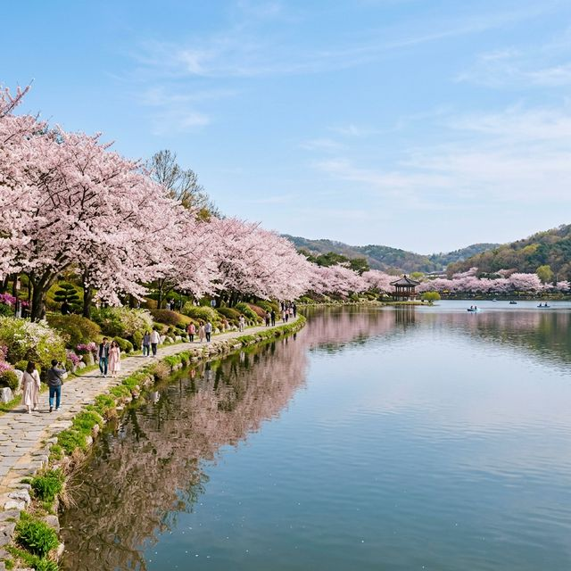
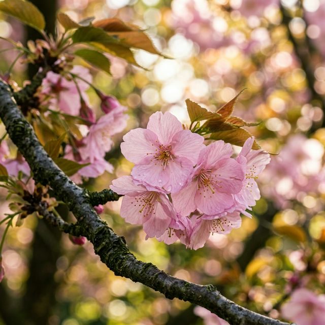
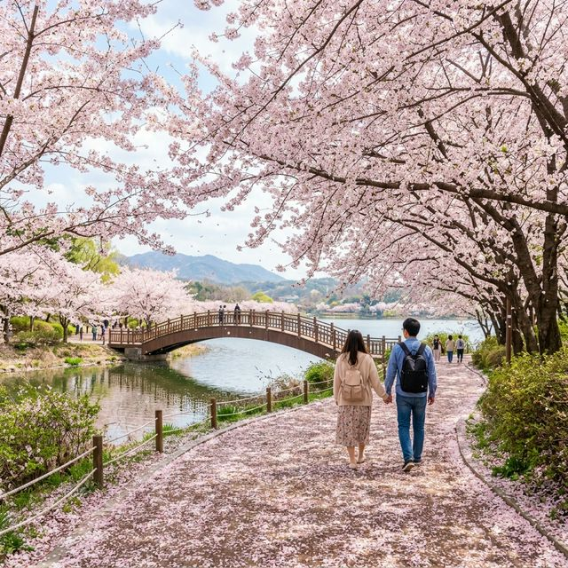

▲ 2026년 4월 3일 오전 촬영된 구리 장자호수공원의 평화로운 벚꽃 전경
기다리고 기다리던 봄의 전령사, 벚꽃이 2026년에는 유독 발걸음이 빠릅니다. 구리시는 당초 4월 11일에 개막 예정이었던 '장자호수 벚꽃마실' 축제를 오늘, 4월 3일로 전격 앞당겼습니다. 이는 최근 급격히 상승한 기온으로 인해 장자호수 일대의 벚꽃들이 벌써 70~80% 가까이 개화하며 '팝콘'을 터뜨렸기 때문인데요.
오늘부터 4월 10일까지는 별도의 무대 행사 없이 벚꽃을 온전히 즐길 수 있는 '자율 관람 기간'으로 운영됩니다. 덕분에 시끌벅적한 마이크 소리 없이 호수 바람과 꽃잎 날리는 풍경을 감상하고 싶은 분들에게는 사실상 오늘이 최고의 방문 시점이라고 할 수 있습니다. 11일부터는 본격적인 퍼레이드와 공연이 이어지니, 조용한 산책을 원하신다면 이번 주말이 황금 골든타임입니다.
오늘 구리시의 낮 최고 기온은 18도로, 가벼운 셔츠나 얇은 가디건 하나면 충분한 따스한 날씨입니다. 미세먼지 수치 또한 '보통' 수준으로 예보되어 있어 호수 산책에 더할 나위 없이 좋습니다. 다만 저녁에는 호수 주변의 수면 온도 영향으로 금세 쌀쌀해질 수 있으니 경량 패딩이나 숄을 준비하시는 센스가 필요합니다.

▲ 꽃잎이 하나둘씩 날리기 시작한 구리 장자호수 산책로의 벚꽃 근접 촬영
벚꽃 축제의 가장 큰 적은 역시 주차입니다. 장자호수공원은 평소에도 주민들이 많이 찾는 곳이라 주차장이 협소한 편인데, 축제 기간에는 더욱 치열합니다. 실패 없는 주차 전략을 정리해 드립니다.
| 주차장 명칭 | 위치 및 특징 | 이용 꿀팁 |
|---|---|---|
| 장자호수공원 공영주차장 | 공원 정문 인근 (토평동 829) | 가장 가깝지만 오전 9시 이전 만차 주의 |
| 구리시 행정복지센터 주차장 | 도보 10분 거리 | 공영보다 여유로운 편, 주말 개방 여부 확인 필 |
| 토평동 일대 민영 주차장 | 인근 상가 건물 내 | 카페 이용 시 무료 주차 가능 (Atelier 05 등) |
약 2km에 달하는 장자호수공원 산책로는 평지 위주로 구성되어 있어 남녀노소 누구나 걷기 좋습니다. 특히 황길 산책로 구역은 흙의 질감을 느끼며 자연과 하나가 되는 기분을 만끽할 수 있어 인기가 높은데요. 이번 2026년 축제에서는 '반려견 놀이터' 인근까지 벚꽃 조명을 강화하여 야간 산책의 묘미도 더했습니다.
중간중간 설치된 벤치에 앉아 호수의 물결을 바라보며 사색에 잠겨보세요. 호수 중앙의 분수가 가동되는 시간에는 벚꽃 사이로 무지개가 생기는 마법 같은 장면도 포착할 수 있습니다. 장자호수생태관에 들러 이 호수가 과거 오염된 물에서 어떻게 생태계의 보고로 복원되었는지 역사를 살펴보는 것도 아이들과 함께하는 가족 단위 방문객에게는 유익한 교육 프로그램이 될 것입니다.

▲ 나무 데크를 따라 펼쳐진 화려한 벚꽃 터널 산책로
이번 축제의 묘미는 바로 참여형 이벤트입니다. '와! 구리와 떠나는 구리 3GO' 탐방은 축제 기간 중 구리의 주요 관광명소에서 인증샷을 남기고, 인근 상권(맛집, 카페)을 이용한 영수증을 인증하면 소정의 기념품을 제공하는 상생형 캠페인입니다. 바닥분수 옆 운영 부스에서 진행되니 영수증은 절대 버리지 말고 챙겨두세요!
금강산도 식후경! 장자호수공원 근처에는 이미 소문난 로컬 맛집들이 즐비합니다. 벚꽃 향기에 취한 후 배를 든든히 채워줄 베스트 리스트를 공개합니다.